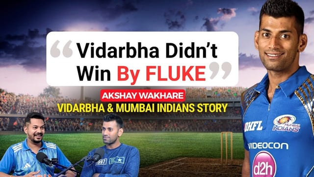

28-Ball 100, 52-Ball 200 at 15: Is Vaibhav Sooryavanshi the Next Sachin or the Next Prithvi Shaw?
 By Sagar Khapre · 25 November 2026 · 5 min read
By Sagar Khapre · 25 November 2026 · 5 min readView BCCI's post on X
28-ball hundred. 52-ball double hundred. 28 sixes. He's 15.
Yesterday in Doha, playing for India A against the UAE in the Asia Cup Rising Stars, Vaibhav Sooryavanshi smashed 204 off just 53 balls. He broke two List A world records in one innings, and India A chased 250 in only 14.2 overs.
Everyone is asking the same question: is this the next Sachin, or are we about to repeat the Prithvi Shaw story? Here's my answer.
He's not the next Sachin. He's the first Vaibhav.
Comparing him to Sachin only adds pressure he doesn't need. Comparing him to Prithvi Shaw is a warning, not a prediction.
I've spent 15 years in IT and the last two years sitting across the table from cricketers on my podcast. Faiz Fazal scored 55* on his India debut and never played another ODI. Akshay Wakhare told me "Vidarbha didn't win by fluke". I know how much grind sits behind every success we see from outside.
My message to BCCI is simple: don't drop him after three innings, and don't let him play only T20s. Give him a proper run, give him Ranji Trophy cricket, and give him a mentor, not just a coach.
And to Vaibhav: keep hitting the way you do. Stay hungry, stay humble, and stay a kid a little longer. Duniya wait kar sakti hai.
— Sagar Khapre
The records he broke
He also hit the fastest double hundred in List A history (52 balls) and a record 28 sixes.
And this isn't a one-off. In IPL 2026 he scored 776 runs with 72 sixes, breaking Chris Gayle's 14-year-old record, and won the Orange Cap and MVP. In February he hit 175 off 80 balls in the U19 World Cup final.
Why bowlers fear him
He kills games early. In IPL 2026 he became the first player ever to score more than 500 runs in the first six overs of a season. By the time the field spreads, the match is gone.
He doesn't respect reputations either. On his India debut at Old Trafford, he pulled Josh Tongue for six. And he saves his best for big days: 175 in a World Cup final, 97 off 29 in an IPL Eliminator, 96 in Qualifier 2.
His own explanation is simple: "My game is the same as what I play in T20 cricket." No overthinking. That's exactly what makes him dangerous.
"Three innings is not a fair trial for a once-in-a-generation talent."— Sagar Khapre
BCCI: right vs wrong
✓ Got right
- Picked him for India within weeks of a record IPL season.
- Backed him after England. He answered with Player of the Series against Zimbabwe.
- Took him to the Asian Games, where he won gold.
✗ Got wrong
- Benched in both Ireland games, dropped after three England innings.
- Picked him to attack, then said his six-hitting "needs to be controlled".
- Almost no red-ball cricket. Missing from Bihar's first two Ranji rounds.
What he must avoid
- Becoming a T20-only player. This 204 came in a 50-over game. The talent for longer cricket is clearly there.
- Getting lost in fame. IIM Indore is literally studying what early fame does to him. We've seen this with Kambli and Shaw.
- Not adapting. England worked him out in three games. Every team will now study his videos.
- Losing his childhood. Cricket careers end at 35. Life doesn't.
His journey so far
Born in 2011 in Tajpur, Samastipur, Bihar. Youngest IPL centurion at 14 with a 35-ball hundred in 2025. U19 World Cup winner and Player of the Tournament in February 2026. India's youngest-ever debutant at 15 years and 99 days in July, younger than Sachin. Asian Games gold in October. And now, a 52-ball double hundred.
All of that before his 16th birthday.
Loved this take?
Wait till you hear the full conversations.
Unscripted. No filters. Real stories from Nagpur's biggest names.
 ▶Watch next
▶Watch next
New episode every week. New take every Monday.
Watch the highlights
His 175 off 80 balls in the U19 World Cup final, February 2026. Official highlights from Willow by Cricbuzz.
Sources: ANI, IANS, ESPNcricinfo, ICC, Reuters, AP, Khel Now, CricTracker, Outlook India, myKhel. Stats as of 25 November 2026.